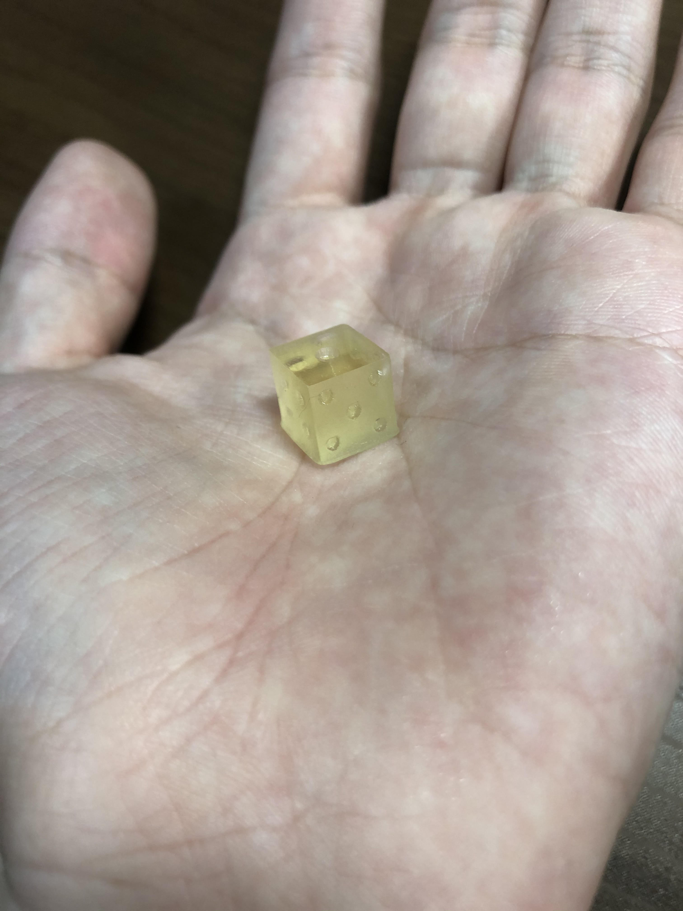
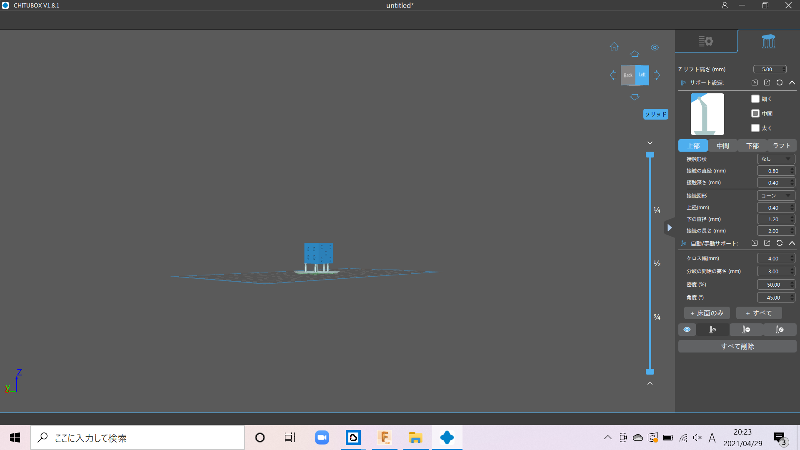

プロジェクト進捗１
質の高い安眠を得られる物を作るということで３DCADを使う練習としてサイコロを作った。
まずは立体の正方形を作り出してそれぞれの辺の長さを１cmにした。

作った立方体に１～６の目をスケッチしてくぼみをつけることで穴を作る。


※5/1追記
実際にFusion360で作成したサイコロのデータを自宅の小さい３Dプリンターを使って出力してみた。
「CHITUBOX」という3DCADのデータを３Dプリンター印刷用のデータに変換させるソフトを使った。

画像のように作成したサイコロのデータに完成品をプリンターから切り離しやすくするためのプラモデルでいう所の「ゲート」を追加して出力した。
しかし、実際に完成したものを見てみるとゲートを付けた部分の足の長さが足りなかったのか、６の目の部分が機械と干渉してしまい潰れて平らになってしまっていた。


画像左側の方はパッと見では作成したデータ通りの形をしているので作り方としては間違っていなかったようだ。しかし、画像右側のようにゲートの足を短く設定してしまったせいで潰れてしまった。作ったデータをそのまま出力させるために出力データ化させる際にもっと丁寧な設定が必要になるようだ。
この反省を踏まえて同じデータで出力設定を見直して作り直してみようと思う。